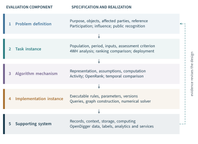

The same collaboration records can support several different inquiries. They can describe who participates, help construct a relational account of influence, or reveal changes around the introduction of a recognition mechanism. Each inquiry requires its own object, comparison, and interpretation. A study that measures participation accurately has not thereby established a community’s sustainability. A ranking that makes coordination visible has not thereby established the benefits of publishing it.
The foundations in Chapter 1 established the objects, effects, and conditions of evaluation. Chapter 2 explained how collaboration produces and renews collective capability, how effects matter to stakeholders, and how evaluation can alter the work it observes. This chapter connects those foundations to an executable research design. Its organizing principle is that every consequential transition—from a question to observations, from observations to a model, and from evidence to a judgment—should have an explicit justification.
The framework develops the five-component architecture in our position paper and the benchmark distinctions in OpenPerf (Han et al., 2024; Han et al., 2025). Three completed research designs provide its empirical substance: the Activity study, OpenRank’s relational evaluation, and the OpenRank Leaderboard (ORL) deployment. Their detailed methods and results appear in Chapters 4–6. Here we reconstruct the questions they asked, the evidence they assembled, and the claims that evidence can support. Recommendations for stronger future designs are identified as extensions rather than attributed retrospectively to the original studies.
The result is the methodological connection between Parts I and II. Activity, OpenRank, and OpenDigger become components of an evaluation whose purpose and evidential obligations have already been specified. Their empirical findings can then refine the framework, as well as demonstrate its use.
3.1 Specify the Question and Intended Use#
Give the purpose operational consequences#
An evaluation purpose should constrain the design. A request to describe participation directs attention to the population, eligible behaviours, and observation period. A request to identify influential repositories requires a definition of influence and an account of the relationships through which it is represented. A decision about continuing a contribution-recognition arrangement requires evidence about the arrangement’s consequences, including burdens as well as benefits. The three questions can use the same infrastructure without becoming the same study.
The working specification from Chapter 1 remains Here is the evaluated object or arrangement; identifies affected objects together with relevant outcome quantities; describes conditions; is the reference alternative; is the horizon; identifies stakeholders; and states the purpose. In a descriptive inquiry, the specification locates the object and intended interpretation without asserting a causal effect. Where an effect is claimed, the affected objects and reference must support that stronger comparison.
The Goal–Scenario–Indicator approach in our position paper gives this sequence an operational form: a goal is situated in a scenario before indicators are selected (Han et al., 2024, Section 3.1.1). This connects to goal-directed data collection in software engineering, where claims determine questions and the data needed to answer them (Basili and Weiss, 1984). Open Source Evaluatology extends the design account by keeping the affected parties, reference conditions, and consequences of use explicit throughout the inquiry.
For the Activity study, the immediate purpose was to characterize participation in public collaboration, including its composition, concentration, and temporal organization. Its developer and repository populations therefore matter as much as its formula. For global OpenRank, the purpose is relational influence across repositories and developers; the graph boundary and propagation assumptions become central. For the leaderboard deployment, the object is a public community arrangement, and its presentation and communication practices belong in the description of that object.
Intended use also determines which errors matter. An exploratory map may tolerate uncertainty that would undermine a public allocation of recognition. A community selecting a maintenance intervention needs evidence about the work it intends to improve, even if the available dashboard makes another quantity easier to observe. Assessment research treats validity in relation to the interpretations and uses of a result (Messick, 1995). A design consequently begins with the claim a result will be asked to carry.
Distinguish a measure from a mechanism that uses it#
A contribution score and a recognition mechanism are related but different evaluated objects. The score is produced by a specified representation and computation. The mechanism includes the score’s publication, explanations, update schedule, audience, and the rules through which it affects recognition or resources. Evidence about either object should identify which version was examined.
The OpenRank Leaderboard study contains both questions (Zhao et al., 2024). It compares the contribution representation with other measures and solicits participants’ assessments. It also examines behavioural reports and recorded changes around deployment. Agreement with participants’ expectations supports an interpretation of the representation in that setting. Changes following publication concern the deployed arrangement. Neither result can substitute for the other.
Prediction introduces another claim. A model that reproduces known scores may be useful for approximation, but forecasting requires performance on outcomes unavailable during model construction. Explanation asks which relationships account for an outcome; prediction asks how well a procedure anticipates an unobserved one. Their objectives and validation requirements differ (Shmueli, 2010). OpenPerf makes this distinction relevant through tasks involving missing observations, future participation, and model-generated indicators.
The practical design choice is to name the primary claim before choosing a convenient metric. Secondary questions can examine mechanisms, alternative explanations, or transfer to other settings. They should retain their own objects and evidential requirements. This makes the study coherent without requiring every investigation to estimate causal effects, predict the future, and establish stakeholder value simultaneously.
3.2 Translate the Question into an Evaluation System#
Five components with different responsibilities#
The position paper organizes evaluation through five components: problem definition, task instance, algorithm mechanism, implementation instance, and supporting system (Han et al., 2024, Figure 2 and Section 3.1). Figure 3.1 adapts that architecture to the methods developed in Part II. The components distinguish responsibilities; they need not correspond to separate programs or a strictly one-way workflow.

The problem definition specifies what is being evaluated and why. It identifies relevant effects, stakeholders, and alternatives. A problem such as contribution recognition must be narrowed to a setting and a defensible interpretation of contribution. The task instance makes that question answerable for a population and period, with named inputs, outputs, and assessment criteria. A task can compare algorithms, characterize an ecosystem, or examine a deployment; the appropriate evidence differs accordingly.
The algorithm mechanism states how the observations enter a calculation or model. Activity aggregates selected behaviours. OpenRank propagates information over specified relationships. A temporal model compares observations around a dated change. These mechanisms must be assessed for the claims attached to them, including the assumptions needed to interpret their outputs.
The implementation instance realizes the method as an executable procedure. Extraction queries, identity rules, numerical stopping criteria, and output precision can affect results even when the named algorithm is unchanged. The supporting system supplies the records, contextual information, storage, and computing resources that make execution possible. OpenDigger connects these responsibilities through its collection, metric, information, analytics, and application services (Wang et al., 2026).
The evaluation architecture and OpenDigger’s software architecture divide responsibilities in different ways. A metric service, for example, contributes to implementation and support. Its definition and assumptions belong to the algorithm and task specifications. Chapter 6 develops the software architecture. The present architecture explains what must be specified and justified when that infrastructure is used for evaluation.
Locate the system and its conditions#
The position paper uses evaluation conditions as a broad heading for the five components. The later Evaluatology monograph gives evaluation condition a more specific construction: the system remaining after the evaluated object is removed from a self-contained system (Zhan et al., 2026, Sections 10.1–10.3). We retain the later terminology and describe the five components here as an evaluation system. The broad conditions in should not be confused with that specific construction.
The distinction matters for open collaboration. A repository dataset is an observation product. A collaboration graph is a mathematical representation. Neither becomes a self-contained system simply because its boundary is explicit. The object causal model, introduced in Chapter 1, concerns the mechanisms relating objects and their effects. A graph of observed interactions can inform that model, but a link in the graph is not by itself evidence of a causal effect.
A simulation preserves a selected mathematical mechanism while simplifying the real setting. A field deployment retains governance, histories, shared participants, and concurrent events, while offering less control over them. The design should explain which conditions are preserved, which are abstracted away, and which interpretation follows. OpenRank’s diffusion simulations and ORL’s deployment are valuable precisely because they examine different aspects of the evaluation under different conditions.
Make the connections inspectable#
The architecture becomes useful when a result can be traced through these components. Consider a repository influence ranking. Its object population follows the task definition; the graph follows the selected developer–repository relations; priors and relation weights follow the model; scores follow a particular solver; and the underlying observations follow a collection and classification process. A change at any of these points may change the ranking.
The same trace works in reverse when a result is disputed. A surprising rank may arise from an identity error, omitted collaboration, an unsuitable prior, or a purpose that the model was not designed to serve. Re-running the solver addresses only some of those possibilities. Investigating the relevant transition directs revision toward the source of the disagreement.
Computational reproducibility makes this investigation possible by preserving the data, code, and conditions needed to repeat a calculation; it remains distinct from independent replication with further evidence (Peng, 2011). In the present framework, reproducibility supports the implementation-to-result connection. It does not establish the meaning of an indicator or the adequacy of the chosen comparison. Those remain responsibilities of the task and problem definition.
The feedback path in Figure 3.1 is the book’s synthesis. A measurement can reveal a missing behaviour category; a contribution case can reveal overlooked coordination; a deployment can alter the observation process. Such findings can require revision above the implementation level. This is the mechanism through which the practice developed in Part II contributes to the theory established in Part I.
3.3 Define Objects, Observations, and Measurements#
Choose the population before interpreting its distribution#
An observed population is constructed through eligibility, identity, time, and access rules. Publicly available repositories are not automatically representative of all software production. A collection of active repositories differs from a collection of all repositories; accounts differ from verified people; a repository may contain only part of a project’s work. Research on mining GitHub establishes the importance of examining how platform features and repository practices correspond to the intended objects (Kalliamvakou et al., 2014).
Our Activity study illustrates the consequences of these choices (Xia et al., 2022). It examines retained GitHub events from 2020, with a CNCF subset and selected project cases. The published contributor definition requires a non-bot account with at least one eligible behaviour. The CNCF maturity groups use a later landscape classification. The resulting comparisons describe those retained groups; they do not estimate the effect of a project changing its maturity status. Section 4.1 preserves the population counts and classification dates.
OpenDigger’s label system makes another part of population construction executable (Wang et al., 2026, Section 3.3 and Appendix A.1). Labels connect identifiers to categories such as projects, initiating organizations, technical fields, and foundations. Set operations can select an intersection or union of those categories. The label version and its membership determine the selected population. A current initiating-company label does not establish every contributor’s historical employment, and a changed label set can alter a series even if repository activity is unchanged.
Table 3.1 distinguishes the units needed by the three research designs. The unit recorded, the object measured, and the unit supporting a comparison need not coincide. This is especially consequential when a large event collection supports a conclusion about a small number of communities.
| Research design | Recorded and measured units | Comparison and interpretation |
|---|---|---|
| Activity | Events are attributed to accounts and repositories; eligible behaviours form contributor and repository measures. | Distributions, periods, maturity groups and selected projects. Accounts can occur in more than one group. |
| OpenRank | Typed nodes and relations form an ecosystem or community graph; the method assigns node scores. | Ranked entities within a declared population; seed sets within a stated diffusion task. Graph boundaries determine the comparison. |
| Leaderboard deployment | Public collaboration records are aggregated into project-month outcomes; surveys and interviews concern participants. | Projects and time periods around launch. Repeated monthly records and shared participants need not be independent. |
Book synthesis of Xia et al. (2022); Han et al. (2026a); Zhao et al. (2024). Event counts, graph nodes, people and communities are different units; a large number of records does not enlarge the number of independently deployed arrangements.
Shared participants require attention at both the measurement and inference stages. An account can contribute to several maturity groups, so group counts may overlap. A person can influence more than one community’s response to a recognition mechanism. The first issue concerns attribution and aggregation. The second concerns dependence and possible exposure across evaluation boundaries. Increasing the event count does not resolve either issue.
Define what the records represent#
A measurement specification names the eligible behaviours, their attribution, the time unit, the transformation, and the aggregation level. These commitments are part of the measure. The Activity lineage contains distinct daily and monthly conventions and changes in aggregation; Chapter 4 examines them without treating a shared name as a guarantee of comparability. The OpenRank lineage likewise distinguishes ecosystem and community graph constructions, which Chapter 5 develops separately.
The behavioural vector should remain available alongside an aggregate when its components have different meanings. A total that rises because more people participate differs from one driven by greater recorded intensity among existing participants. The same observation motivates inspection of automated and human participation. Measurement validation in software engineering distinguishes units, instrumentation, protocols, and entity populations, rather than limiting validation to a formula (Kitchenham et al., 1995).
Observation time also has several meanings. Event time describes when a recorded action occurred; collection time describes when it became available to the evaluation; a profile or label snapshot records contextual information at another time. Applying a current identity or affiliation to earlier events is a retrospective assumption. A prediction made at a historical date must be constructed from information available by that date.
Missingness should be interpreted through the collection process. No eligible recorded action, no exported metric file, an unavailable collection interval, and unobserved private work are different situations. They cannot all become zero participation. OpenDigger makes recurring observation feasible, but its publication population and collection boundaries remain part of each task specification. Section 6.2 examines these service-level conditions.
Separate a changed observation from a changed measure#
Versioning permits a comparison to distinguish changed data from changed computation. Suppose and produce a common, explicitly comparable scalar quantity, and both can be applied to datasets and . Then
The first term compares datasets under the new method; the second compares methods on the old data. This exact algebraic decomposition is an analytical aid, not a causal attribution or a unique allocation between interacting changes. Reversing the order gives another decomposition. If the versions change the quantity or scale, a bridge must first be justified; subtraction alone does not establish comparability.
This distinction is useful when a metric changes behaviour weights, bot treatment, or history handling. A rise in the released series could combine new activity with a revised computation. Reprocessing an earlier snapshot under the revised method can help locate the difference. It cannot recover records that were never collected or establish that the newly represented activity benefited the community.
The provenance record should therefore preserve both the definition and the conditions of its realization: source snapshots where available, inclusion rules, identity mappings, labels, computation version, parameters, and output units. A numerical result is then attached to a specific observation and measurement procedure. This is the practical connection between the object-and-condition account of Evaluatology and the data work developed in Chapters 4 and 6.
3.4 Select Models and Reference Conditions#
Match the representation to the intended claim#
Behavioural aggregation is appropriate when the question concerns the amount, composition, or distribution of recorded participation. A relational model becomes useful when the question concerns connections among participants and collaborative work. Global OpenRank represents influence across repositories and developers; community OpenRank represents contribution through relations around issues and pull requests (Han et al., 2026a; Zhao et al., 2024). The graph construction and prior information determine which interpretation is available.
A model’s name does not remove these commitments. Centrality interpretations depend on assumptions about the processes that connections represent (Borgatti, 2005). A developer–repository graph, a projected repository graph, and a developer–issue/pull-request graph contain different objects and relationships. Comparing methods across them requires an account of what has been held fixed and what has changed. A rank is meaningful within its declared comparison population; it is not automatically an absolute quantity transferable between communities.
Reference conditions should preserve the question while varying the object under evaluation. Algorithm comparisons require a shared task, input boundary, and outcome criterion, with each method’s adaptations made explicit. Deployment comparisons require an alternative arrangement and a credible account of what would have occurred under it. In both cases, changing several conditions at once can answer a legitimate question about a package, but it cannot isolate the contribution of one component without further design.
Use benchmarks for their stated roles#
OpenPerf distinguishes data-science task benchmarks, index benchmarks, and exemplar benchmarks (Han et al., 2025, Section 3). Table 3.2 preserves those roles while relating them to this book. A task benchmark supports comparisons of methods. An index defines a representation used to compare entities on a dimension. An exemplar identifies an entity or practice regarded as a reference level of performance. Their connections permit a judgment to be traced, but they do not make the three roles interchangeable.
| Role in OpenPerf | What supplies the reference | Use in the evaluation |
|---|---|---|
| Data-science task benchmark | A stated problem, dataset, candidate methods and evaluation criterion; for example, bot identification. | Compare methods on a common task. Preserve labels, partitions, metrics and execution conditions. |
| Index benchmark | A defined quantitative representation, such as an influence index for developers or repositories. | Compare entities on the stated dimension. Specify population, scale, period and version. |
| Exemplar benchmark | A selected entity or practice treated as a reference level, such as developers identified in a recognition scenario. | Interpret a target or comparison through concrete examples. Document selection and seek evidence beyond the selecting index. |
Adapted from Han et al. (2025), Section 3. A data-science task is specified by six fields: task name, open source scenario, task type, dataset, model and evaluation criterion. The distinctions in the final column are this books methodological interpretation.
The source specifies six elements for a data-science benchmark task: task name, open source scenario, task type, dataset, model, and evaluation criterion. These elements link a domain need to an executable comparison. For example, bot identification specifies the kind of account to be classified, the available account features, the labelled data, the candidate methods, and the criterion used to assess their outputs. The task does not become a direct assessment of community health merely because its labels improve a later measurement.
The three benchmark roles also expose possible circularity. OpenPerf’s illustrative recognition chain connects a ranking task to an influence index and then to developers selected as exemplars. This is a useful provenance chain. If the same index chooses the exemplars and agreement with those exemplars is then treated as independent validation of the index, the reasoning becomes circular. A defensible validation requires evidence not defined solely by the output being assessed.
The task definitions themselves need careful interpretation. In the published task catalogue, the influence-ranking task lists algorithm runtime as its evaluation metric; the supplied catalogue does not thereby provide an independent influence ground truth. Some other task fields are left unspecified. We retain that distinction: a benchmark catalogue can organize a research programme before every task has a complete validation protocol. Its contribution is the explicit task space and traceable specification, with unresolved requirements still visible.
Distinguish simulation, prediction, and field comparison#
OpenRank’s diffusion experiments provide a model-based reference for one interpretation of influence. Ranked nodes are used as seeds, and their reach is examined under selected propagation models (Han et al., 2026a). The independent-cascade and linear-threshold models have distinct activation mechanisms (Kempe et al., 2003). Comparing the same seed budget and graph under each model asks how the ranking performs under those mechanisms.
Let be the seeds chosen by method , and let be the number of activated nodes in simulation run , on graph under propagation model . A Monte Carlo estimate of reach is
This notation states what the simulation comparison measures; it does not reconstruct unreported run-level data. The graph, activation parameters, seed budget, and simulation procedure define the result. Stronger reach under one model is evidence about that modelled task. It does not directly establish real-world adoption, software quality, or stakeholder benefit.
Predictive tasks use another reference: observations withheld from model construction. OpenPerf includes tasks based on removing known observations and reconstructing them, as well as tasks described in terms of future behaviour. A random holdout of existing links examines recovery under its deletion mechanism. Forecasting future links requires temporal ordering and an eligibility rule for candidate links at the prediction date. These are different tasks even if both report AUC.
An assessment of bot identification should report the positive class, prevalence, threshold, and cost of mistakes. Precision and recall clarify the relation between flagged accounts and detected cases; their interpretation can be more informative than a superficially favourable ROC curve in imbalanced settings (Saito and Rehmsmeier, 2015). Applying that methodological lesson does not revise the historical benchmark’s reported metrics. It states what a new evaluation should report for its intended use.
A field comparison introduces conditions that neither a fixed benchmark nor a diffusion simulation supplies. Shared maintainers, releases, publicity, and changes in workflow can affect both participation and measured outcomes. The design must choose a reference appropriate to those conditions. The leaderboard study, examined below, supplies a completed example and makes the remaining inferential obligations concrete.
3.5 Plan Validation and Interpret Evidence#
Validate the claim at the level where it can fail#
Table 3.3 joins the choice of reference to the evidence required for a conclusion. The comparisons are complementary. Agreement between implementations tests realization; agreement with another ranking tests correspondence under a shared population; a diffusion experiment tests performance under a propagation model; a deployment examines a mechanism operating in a social setting. None supplies a universal validity certificate for all uses of a score.
| Comparison | Reference and supporting evidence | Scope of the conclusion |
|---|---|---|
| Implementation agreement | Identical inputs and parameters; an independently checked computation or retained reference output. | Agreement in realizing the specified measure or model. Semantic validity requires additional evidence (Chs. 4–6). |
| Score comparison | Other measures and participant assessments, with the compared population and shared inputs identified. | Correspondence or disagreement within that population; not an independent contribution-quality label (Ch. 5). |
| Simulated diffusion | Common graph, seed budget and propagation model; reported reach for ranked seed sets. | Performance in the defined simulation; real diffusion and benefit require further observation (Ch. 5). |
| Prediction | Outcomes unavailable during fitting and selection; splits appropriate to time and transfer claims. | Performance on the stated target and test population. Predicting an index validates neither its meaning nor its use. |
| Field deployment | Dated introduction, pre-launch history, a justified reference, participant accounts and observation checks. | Evidence about the deployed arrangement under recorded conditions; stronger causal claims depend on identification (Ch. 6). |
Methodological synthesis. The completed studies supply different subsets of this evidence; the table does not attribute every recommended check to their original protocols.
For Activity, validation concerns the selected behaviours, attribution, units, and aggregation as well as the accuracy of the calculation. For OpenRank, it concerns graph semantics, priors, propagation, and the interpretation of the resulting ordering. For OpenDigger, it also concerns whether the intended computation is feasible under the observed network population and service conditions. For a recognition arrangement, it includes exposure, behaviour, recording practices, and consequences for affected parties.
The reference itself must be examined. Correlation with event counts is informative about correspondence, but shared inputs can produce association without independently validating contribution quality. Participant assessments add evidence about perceived correspondence and acceptability. The ORL study’s selected cases help explain disagreement among measures. These forms of evidence become more useful when their dependence and scope are visible.
Qualitative evidence can examine mechanisms that aggregates leave unresolved. Interviews can identify why work moved to public channels, how participants understood recognition, or which obligations were omitted from the visible record. Case-study methodology emphasizes a traceable chain of evidence and examination of alternative explanations (Runeson and Höst, 2009). An interview, a survey, and a metric series should be combined according to the question each can address, rather than counted as three interchangeable confirmations.
Protect predictive evaluation from information reuse#
When a task makes a predictive claim, validation data must be separated from the information used to construct and select the procedure. Choosing a model because it performs best on a finite validation sample can itself overfit the selection criterion (Cawley and Talbot, 2010). A held-out test set is useful only if repeated inspection has not effectively turned it into another selection set.
For an open source task, the separation can involve time, repositories, accounts, and connected components. A future-participation claim needs features available before the forecast date. A transfer claim needs communities withheld from selection. A contributor appearing in both partitions may be appropriate for predicting that contributor’s future work, but problematic for a claim about entirely unseen contributors. The split should follow the intended use rather than a routine random partition.
Leakage can also enter through preprocessing and labels. Normalization fitted on future data, a later repository status used as a historical feature, or a graph constructed using future edges can reveal information unavailable at prediction time. Research on leakage in machine-learning-based science documents why checking only the model-fitting code is insufficient (Kapoor and Narayanan, 2023). The entire construction of the task’s inputs and targets needs examination.
One conventional performance summary is
where the fitted and selected procedure is fixed before the test outcomes are used for assessment. The loss , test population, and dependence structure determine the interpretation. If is an existing OpenRank score, the task assesses approximation of that score. If records later archival status, it assesses prediction of that status. Neither target becomes a direct measure of stakeholder value by being predictable.
These requirements are extensions for designing and assessing tasks. They should not be read as claims that every historical task in OpenPerf implemented a temporal holdout or an independent external test. The original protocols remain identifiable, and their reported performance retains the scope of those protocols.
Interpret temporal changes under the actual design#
The leaderboard deployment provides a concrete case of a time-based comparison. It follows seven projects for six months before the October 2022 launch and six months afterwards, from April 2022 through March 2023 (Zhao et al., 2024). The source describes its analysis as regression discontinuity and fits a segmented model with a common control series. Section 6.6 retains the original coefficients and significance symbols.
Using the notation adopted there, the reported model is
The time index describes the underlying trend; indicates the post-launch period; is zero before launch and increases with time afterwards; and is the contemporaneous control series. The coefficient represents a level contrast under the chosen time coding, while represents a slope change. Neither is automatically a percentage change between period means.
This is a model with a calendar-time cutoff. Interrupted-time-series methodology directs attention to the specified impact pattern, autocorrelation, seasonality, and concurrent changes (Lopez Bernal et al., 2017). Conventional regression discontinuity relies on a justified comparison around an assignment threshold (Lee and Lemieux, 2010). A launch date and a fitted discontinuity do not by themselves establish that other determinants of the outcome remained comparable.
The control series can help account for shared temporal variation, while project-specific events and changing observation practices remain possible explanations. The source does not report enough detail to reconstruct every choice in the design matrix, project aggregation, and error specification. We therefore use its published results without inventing uncertainty intervals or presenting a new causal estimate. Twelve observations per project are also not twelve independent deployments.
Relations between communities add another consideration. A contributor can participate in more than one project or be exposed to recognition practices elsewhere. Formal work on interference shows why one unit’s outcome may depend on the treatment of others (Hudgens and Halloran, 2008). In this setting, that concern is substantive: shared people, attention, and knowledge can cross the repository boundary. A future comparison should record such exposure and specify the effect it intends to estimate.
Connect evidence to stakeholder standards#
Chapter 2’s stakeholder effect profile preserves outcomes in their own units, while its feasibility conditions state requirements for an acceptable arrangement. Those formulations constrain the judgment made from evidence. A rise in comments can be relevant to public communication; a claim about useful review requires additional assessment of review content and consequences. A continuation decision may also depend on maintainer effort or the distribution of recognition.
A statistical test does not supply the value standard. A -value does not measure effect magnitude or practical importance (Wasserstein and Lazar, 2016). A result should therefore report the direction and scale of the observed difference, the uncertainty supported by the analysis, and the substantive conditions under which it matters. An imprecise estimate, evidence of a small effect, and an inadequate observation process are different reasons for withholding a strong conclusion.
For a new study, suppose is an effect on a defined benefit and an effect on a defined burden. Let be a lower uncertainty bound for the benefit and an upper bound for the burden. A possible conservative requirement is
The quantities retain their own units, and the thresholds express justified stakeholder requirements. This is a design formulation, not a rule used in the published ORL experiment. The bounds need a stated inferential basis, including their joint use. The existing studies cannot be made to satisfy the rule by assigning unobserved benefits or burdens convenient values.
An unresolved comparison can be a valid outcome of evaluation. It may identify a missing observation, an uncertain mechanism, or disagreement about an acceptable trade-off. The useful conclusion states which issue remains and which evidence could change the judgment. This preserves the distinction between measuring an observable quantity and evaluating its consequences for a collaborative undertaking.
3.6 Three Completed Evaluation Designs#
The preceding requirements can now be read through the studies that anchor Part II. These reconstructions distinguish what the studies implemented from what this book derives or recommends. Table 3.4 provides the common comparison; the following accounts explain how each design connects a question to evidence.
| Study and question | Implemented evidence | Contribution to Part II |
|---|---|---|
| Activity: who participates, in what ways, when and where? | Retained GitHub events, a CNCF subset, behavioural aggregation, human/bot distinctions and selected project analyses. | An empirical account of recorded participation. Chapter 4 preserves the definitions, population and 4WH findings. |
| OpenRank: what does a relational representation capture? | Formal algorithm, diffusion comparisons, community cases, comparisons among measures and participant assessments. | A relational method examined at several levels. Chapter 5 develops its semantics and evidence; Chapter 6 examines execution. |
| ORL: how does evaluation operate when publicly deployed? | A dated leaderboard introduction, project-month series, a common control series, participant survey and interviews. | Evidence about visibility, reported practices and recorded outcomes. Chapter 6 examines deployment and its interpretation. |
Reconstructed from Xia et al. (2022); Han et al. (2026a); Zhao et al. (2024). OpenDigger supports observation and execution (Wang et al., 2026); OpenPerf organizes benchmark roles (Han et al., 2025). The OpenRank and ORL accounts share evidence and are not independent replications.
Activity: describing participation through several behaviours#
The Activity study asks who participates, what forms of behaviour they contribute, when those behaviours occur, and where participation appears in the collaboration landscape (Xia et al., 2022). The 4WH organization turns a broad concern with sustainability into a set of descriptive inquiries. A common behavioural representation makes those inquiries comparable within a declared dataset.
The retained 2020 collection contains 863,415,606 records and 4,519,712 contributors under the source’s definition. Its CNCF subset contains 79 repositories. These numbers describe different units and selection rules; the complete population table in Chapter 4 keeps records, repositories, accounts, contributors, and bots separate. The observations supply behavioural distributions and selected project analyses, rather than direct measurements of all work performed by the corresponding communities.
The original study combines weighted behaviours, distinguishes human and identified bot participation, examines concentration, and studies temporal patterns. It also compares CNCF maturity groups and selected communities. Those comparisons make differences in the organization of recorded participation visible. The published concentration results and charts are retained in Chapter 4 under their historical definitions, rather than recomputed using the later monthly Activity implementation.
The design contributes to evaluation by establishing an inspectable account of participation beyond committed code. It also identifies questions about collective capability: concentrated work, differing automation patterns, and temporal organization can matter to maintenance. As Chapter 2 argues, a sustainability interpretation additionally requires evidence about essential functions, substitutability, burden, and renewal. The descriptive study supplies empirical anchors for those questions without claiming that event concentration alone measures resilience.
The transition to Chapter 4 is therefore precise. That chapter implements the observation boundary, reconstructs the Activity definitions and their lineage, and presents the 4WH findings. A reader can assess the measurement before attaching a stronger judgment to its output. Historical bot classifications and maturity labels remain associated with the source exhibits; improved procedures can inform a new study without silently rewriting the published population.
OpenRank: examining a relational account of influence and contribution#
The relational design asks what becomes visible when collaboration is represented through connected entities and typed relations. The OpenRank algorithm provides a general calculation, with global influence and community contribution as distinct constructions (Han et al., 2026a). The resulting evaluation programme examines the method at several levels rather than assigning a single interpretation to every experiment.
At the algorithmic level, a formal model specifies normalization, priors, propagation, and convergence. At the task level, diffusion simulations compare ranked seed sets under stated activation mechanisms. At the community level, selected developer profiles and comparisons with behaviour-based rankings examine which kinds of work the representation emphasizes. Participant assessments add evidence about perceived correspondence in the deployment setting (Zhao et al., 2024).
The community study’s comparison among developers selected in the top 200 under OpenRank is consequently read as a comparison within that selected population. The selected coordination case explains how interaction across issues can yield a different rank from commit volume. The survey obtained 63 responses from 527 solicited developers. That evidence concerns the respondents’ assessments; the response process and shared inputs remain relevant to its interpretation. Sections 5.4–5.5 retain the full cases and survey summaries.
The computing experiments answer another question: whether the evaluation can be executed efficiently on the reported population of networks. Runtime, preparation cost, iterations, and historical information concern realization and feasibility. They belong with the infrastructure in Chapter 6. They do not independently validate the social meaning of the scores. A faster solver can make an evaluation operational while leaving its conceptual assumptions unchanged.
This allocation of evidence connects Chapters 5 and 6 without duplicating their results. Chapter 5 explains the operator and the global/community constructions, then examines model-based and community evidence. Chapter 6 examines execution and deployment. Together they support a relational evaluation method whose meaning, calculation, and use can be investigated separately and then brought into one argument.
OpenRank Leaderboard: evaluating a public arrangement#
The deployment design asks how a contribution evaluation operates when it becomes visible to the community. Its object includes a monthly leaderboard, explanations of the calculation, links to collaboration networks, and repeated communication through project channels (Zhao et al., 2024). The seven participating projects were mature, company-supported communities. Their setting is part of the evidence, rather than a neutral container for a universally transferable intervention.
The study combines assessment of the representation, interviews with 18 participants, and the twelve-month series surrounding launch. These components have distinct roles. The survey addresses perceived correspondence with contribution. Interviews examine reported changes in communication and development practices. The temporal analysis describes and models changes in recorded outcomes around the launch, using a contemporaneous control series.
The findings become coherent when read at those levels. Coordination that was previously overlooked can become visible. Participants can move discussions into public channels or divide work into smaller pull requests. Recorded collaboration measures can change. The observations motivate an account of how evaluation changes attention, behaviour, and visibility, while leaving further questions about content quality, continuing burden, and long-term capability to be investigated.
The interpretation also preserves the version of the arrangement. Later descriptions of accumulated points or tangible rewards do not establish when each component entered the deployment. Chapter 6 distinguishes the dated study from subsequent development. A method evaluation should similarly distinguish the ranking calculation from the surrounding recognition policy and the actual exposure experienced by participants.
The bridge to Chapter 6 is thus both empirical and theoretical. OpenDigger supplies the observation and execution infrastructure; ORL places an evaluation result inside a collaborative process. The reported responses then refine the theory developed in Chapter 2: evaluation can change the work and the process through which it becomes observable. A continuing evaluation must retain enough evidence to distinguish those changes.
The methodological connection to Part II#
The three designs share a discipline rather than a single estimator. Each specifies an undertaking, an observable representation, a method, a reference, and a bounded interpretation. Their differences are necessary: describing activity, assessing a relational model, and examining a public arrangement require different evidence. The framework makes these differences explicit while retaining their common connection to Evaluatology’s objects, conditions, effects, and value.
Part II now follows the resulting sequence. Chapter 4 establishes what is observed and how activity is measured. Chapter 5 develops the relations and algorithms through which influence and contribution are represented. Chapter 6 makes those procedures operational and follows evaluation into practice. The sequence can also be read backwards: deployment reveals observation changes, relational cases expose missing work, and measurement choices refine the original question.
This completes Part I’s progression from the foundations of the field, through value and sustainability, to the design of an examinable evaluation. The methods that follow are components of that inquiry. Their contribution is strongest when a reader can trace a result back to its question and carry its evidential limits forward into the judgment made from it.
References#
Basili, V. R., and Weiss, D. M. (1984). A methodology for collecting valid software engineering data. IEEE Transactions on Software Engineering, SE-10(6), 728–738. DOI: 10.1109/TSE.1984.5010301.
Borgatti, S. P. (2005). Centrality and network flow. Social Networks, 27(1), 55–71. DOI: 10.1016/j.socnet.2004.11.008.
Cawley, G. C., and Talbot, N. L. C. (2010). On over-fitting in model selection and subsequent selection bias in performance evaluation. Journal of Machine Learning Research, 11, 2079–2107. https://jmlr.csail.mit.edu/papers/v11/cawley10a.html.
Han, F., Zhao, S., Wang, W., Zhou, A., Qian, W., Zhou, X., Peng, J., You, L., Chen, Y., Xia, X., Tang, Y., Yang, L., and Tian, C. (2024). Open Source Evaluatology: An evaluation framework and methodology for open source ecosystems based on evaluatology. BenchCouncil Transactions on Benchmarks, Standards and Evaluations, 4(4), 100190. DOI: 10.1016/j.tbench.2025.100190. Bibliographic note: the journal assigns this article to the December 2024 issue; the DOI and online publication date are in 2025.
Han, F., Bi, F., Zhang, Y., Li, H., You, L., Wang, W., Qian, W., and Zhou, A. (2025). OpenPerf: A data science benchmark system for open source ecosystem sustainable development. Chinese Journal of Computers, 48(3), 632–649. In Chinese. DOI: 10.11897/SP.J.1016.2025.00632.
Han, F., Zhao, S., Wang, W., Peng, J., and Xia, X. (2026a). OpenRank: A centrality algorithm for high-dimensional heterogeneous networks in open source collaboration. Information Sciences, 730, 122893. DOI: 10.1016/j.ins.2025.122893.
Hudgens, M. G., and Halloran, M. E. (2008). Toward causal inference with interference. Journal of the American Statistical Association, 103(482), 832–842. DOI: 10.1198/016214508000000292.
Kalliamvakou, E., Gousios, G., Blincoe, K., Singer, L., German, D. M., and Damian, D. (2014). The promises and perils of mining GitHub. In Proceedings of the 11th Working Conference on Mining Software Repositories, pp. 92–101. ACM. DOI: 10.1145/2597073.2597074.
Kapoor, S., and Narayanan, A. (2023). Leakage and the reproducibility crisis in machine-learning-based science. Patterns, 4(9), 100804. DOI: 10.1016/j.patter.2023.100804.
Kempe, D., Kleinberg, J., and Tardos, É. (2003). Maximizing the spread of influence through a social network. In Proceedings of the Ninth ACM SIGKDD International Conference on Knowledge Discovery and Data Mining, pp. 137–146. ACM. DOI: 10.1145/956750.956769.
Kitchenham, B., Pfleeger, S. L., and Fenton, N. (1995). Towards a framework for software measurement validation. IEEE Transactions on Software Engineering, 21(12), 929–943. DOI: 10.1109/32.489070.
Lee, D. S., and Lemieux, T. (2010). Regression discontinuity designs in economics. Journal of Economic Literature, 48(2), 281–355. DOI: 10.1257/jel.48.2.281.
Lopez Bernal, J., Cummins, S., and Gasparrini, A. (2017). Interrupted time series regression for the evaluation of public health interventions: A tutorial. International Journal of Epidemiology, 46(1), 348–355. DOI: 10.1093/ije/dyw098.
Messick, S. (1995). Validity of psychological assessment: Validation of inferences from persons’ responses and performances as scientific inquiry into score meaning. American Psychologist, 50(9), 741–749. DOI: 10.1037/0003-066X.50.9.741.
Peng, R. D. (2011). Reproducible research in computational science. Science, 334(6060), 1226–1227. DOI: 10.1126/science.1213847.
Runeson, P., and Höst, M. (2009). Guidelines for conducting and reporting case study research in software engineering. Empirical Software Engineering, 14(2), 131–164. DOI: 10.1007/s10664-008-9102-8.
Saito, T., and Rehmsmeier, M. (2015). The precision-recall plot is more informative than the ROC plot when evaluating binary classifiers on imbalanced datasets. PLOS ONE, 10(3), e0118432. DOI: 10.1371/journal.pone.0118432.
Shmueli, G. (2010). To explain or to predict? Statistical Science, 25(3), 289–310. DOI: 10.1214/10-STS330.
Wang, W., Han, F., Zhao, S., Zhou, X., Qian, W., Zhou, A., Xia, X., Yang, L., Wang, R., Jiang, N., and Duan, M. (2026). OpenDigger: A practical framework for assessing community health and sustainability in open source collaboration platforms. In Proceedings of the ACM Web Conference 2026, pp. 7745–7756. ACM. DOI: 10.1145/3774904.3792807.
Wasserstein, R. L., and Lazar, N. A. (2016). The ASA statement on p-values: Context, process, and purpose. The American Statistician, 70(2), 129–133. DOI: 10.1080/00031305.2016.1154108.
Xia, X., Weng, Z., Wang, W., and Zhao, S. (2022). Exploring activity and contributors on GitHub: Who, what, when, and where. In 2022 29th Asia-Pacific Software Engineering Conference, pp. 11–20. IEEE. DOI: 10.1109/APSEC57359.2022.00013.
Zhan, J., Wang, L., Gao, W., Wang, C., Fan, F., Kang, G., and Li, H. (2026). Evaluatology: The Science of Revealing Causes and Effects [title translated from Chinese]. Chinese edition, version 1.0, August 2026. BenchCouncil Press. ISBN 978-988-71596-9-8. DOI: 10.66834/33wi1xx8. Page references refer to the printed pagination of this edition.
Zhao, S., Xia, X., Fitzgerald, B., Li, X., Lenarduzzi, V., Taibi, D., Wang, R., Wang, W., and Tian, C. (2024). OpenRank Leaderboard: Motivating open source collaborations through social network evaluation in Alibaba. In Proceedings of the 46th International Conference on Software Engineering: Software Engineering in Practice, pp. 346–357. ACM. DOI: 10.1145/3639477.3639734.